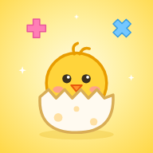

特定商取引法に基づく表記
たまごと けいさん れんしゅう（小学生向けの計算練習アプリ・App Store 版）
販売事業者
- 販売事業者
- 新城 克哉（個人で開発・運営しています。運営者名：katsu-ya）
- 運営責任者
- 新城 克哉
- 所在地・電話番号
- 請求があった場合、遅滞なく開示いたします。下のメールアドレスまでご連絡ください。
- 連絡先（メールアドレス）
- katsu.rx.101@gmail.com
お問い合わせはメールで受け付けています。内容を確認のうえ、順にお返事します。
販売価格
- 30日間 無料お試し
- 0円（1つの Apple ID につき1回）
- けいさん れんしゅう 月額（自動更新サブスクリプション）
- 月額300円（税込）
価格は、購入の前に App Store の購入画面にも表示されます。
商品代金以外に必要な料金
アプリのダウンロードや、App Store での購入の手続きにかかるインターネットの通信料は、お客様のご負担となります。
お支払いの方法と時期
- お支払いの方法
- App Store の決済（お使いの Apple ID に登録されたお支払い方法）でお支払いいただきます。開発者は、クレジットカードなどのお支払いの情報を受け取りません。
- お支払いの時期
- 月額の登録の購入を確認したときに、Apple ID に請求されます。その後は1か月ごとに自動で更新され、更新日の24時間前から更新の料金が請求されます。
提供の時期
App Store での購入の手続きが終わると、すぐにすべての機能を使えます。
30日間 無料お試しの内容
- アプリの「おうちのかたへ」（保護者用の暗証番号で開く画面）で「30日間 無料で ためす（0円）」を押し、App Store の確認（0円）をした日から、30日間すべての機能を無料で使えます（始めた日を1日目として30日目まで）。
- お試しは0円の購入で、お試しが終わっても自動で課金されることはありません。月額の登録に自動で切り替わることもありません。
- お試しが終わったあとは練習ができなくなりますが、記録（キャラクター・バッジ・カレンダー・学習レポート）を見ることと、記録のバックアップはこれからもできます。
- お試し中に月額の登録をした場合は、その日から月額が始まり、お試しの残りの日数はなくなります。
解約の方法
- iPhone・iPad の「設定」→ ご自分の名前 →「サブスクリプション」で、このアプリを選んで解約できます。アプリの「おうちのかたへ」→「ご利用のプラン」の「登録の確認・解約」からも、同じ画面を開けます。
- 次の更新日の24時間前までに解約すると、次の月からは請求されません。解約しても、すでにお支払いいただいた期間の終わりまでは使えます。
- アプリを削除しても、サブスクリプションは解約されません。
返品・返金（キャンセル）について
- デジタルコンテンツの性質上、購入後の返品はお受けしておりません。月の途中で解約した場合も、その月の日割りの返金はありません。
- 返金は、Apple の規定に従います。返金をご希望の場合は、Apple の「問題を報告する」（reportaproblem.apple.com）からお申し込みください。返金するかどうかは Apple が判断します。
動作環境
iOS 15.0 以降の iPhone・iPad（iPadOS 15.0 以降）。
購入の前に、App Store のこのアプリのページで、対応する機種とバージョンをご確認ください。